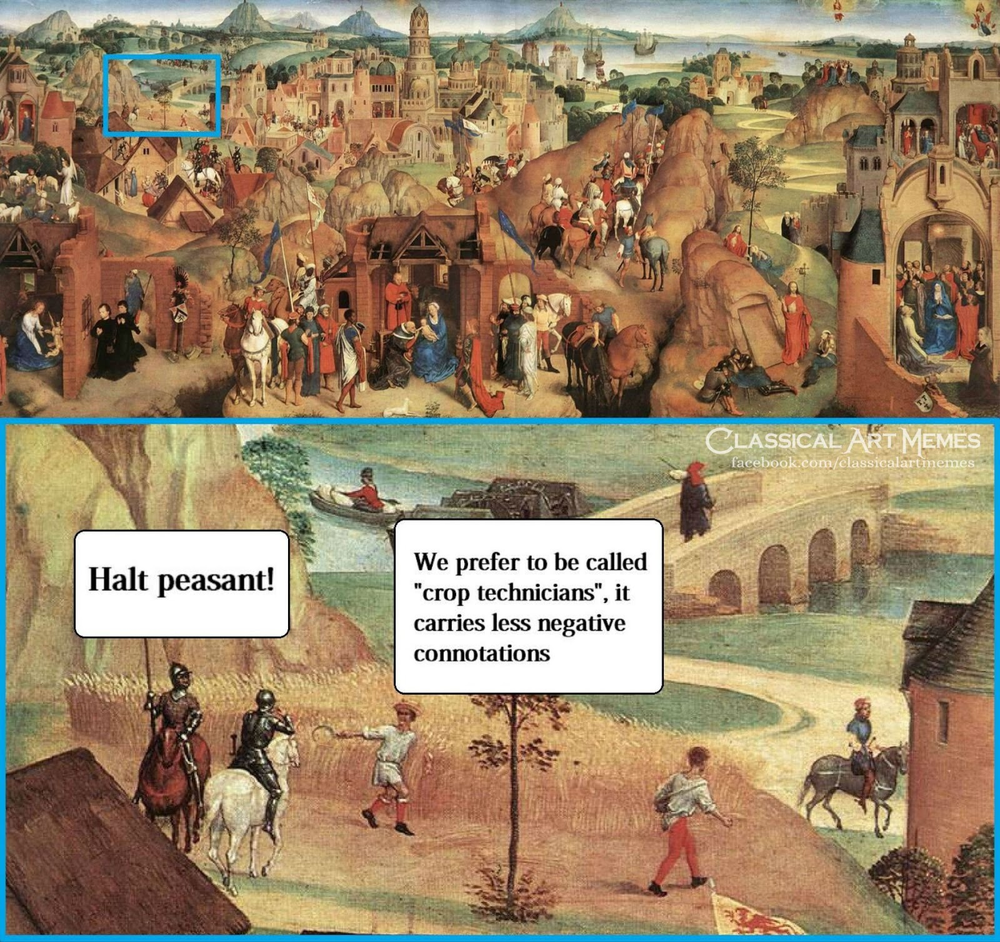
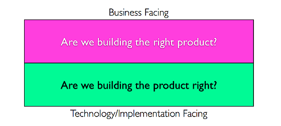

Notes From The Underground - V
Modernity cannot be identified with any particular technological or social breakthrough. Rather, it is a subjective condition, a feeling or an intuition that we are in some profound sense different from the people who lived before us.
[Adam Kirsch (2016)]

The quantum protectorate describes a stable state of matter whose generic properties are determined by a higher organising principle and nothing else. The very large number of atoms present in real bits of matter lead to fundamentally new types of behaviour which are not just simply the properties of an individual atom multiplied by the number of atoms. Different behaviour occurs when you have more.
 (2013)
(2013)
Make two marks on your mirror on a level with your eyes, and think of them as two human eyes looking into yours.
Do not move your head, but stand erect. Concentrate all your thoughts on keeping your head perfectly still.
Do not let another thought come into your mind. Then, still keeping the head, eyes and body still, think that you look like a reliable man or woman should; like a person that anyone would have confidence in.
While standing before the mirror practice deep breathing.
The one that stands up like a man and has control over the muscles of his face and eyes always commands attention.
Also, sit in a comfortable chair and see how still you can keep.
This is not as easy as it seems.
You will have to center your attention on sitting still.
Watch and see that you are not making any involuntary muscular movements.
By a little practice you will find you are able to sit still without a movement of the muscles for fifteen minutes.
At first I advise sitting in a relaxed position for five minutes.
After you are able to keep perfectly still, increase the time to ten minutes and then to fifteen.
This is as long as it is necessary.
But never strain yourself to keep still.
You must be relaxed completely.
The Art of Manliness (2012)
Alexey Kondakov takes figures from classical paintings and drops them into modern-day Kiev.
 Fubiz (2015)
Fubiz (2015)
I regard the whole Northwestern United States to be among the global hubs of our present derangements. This week it emerged that Seattle 's school board has decided even maths must be subjected to the same numbing and unthinking orthodoxy of our time. In particular that mathematics must – like everything else – be seen through the prism of racism and oppression. Thus as the Seattle Public Schools guidelines for maths education show, students in Seattle schools will be invited to consider questions such as "Where does Power and Oppression show up in our math experience?" or "How has math been used to resist and liberate people and communities of color from oppression?" The cleverer students will realise that there is a "correct" answer to the questions, whether or not those answers are true – as there is to every other question of our age. They'll work out that the answer to every question posed by the Seattle authorities will always and everywhere be the same: "more diversity". But the problem is not with the smarter students, who like most smart people will always find a way to navigate around the lies and dogmas of their age, but the less intelligent applicants. A rather basic knowledge of maths would help such people and come in very handy in their lives: in ordering their finances, and working out their day-to-day interactions with others. If they do not pick up these basics at school, then it is highly unlikely that they will pick them up at some later stage, the education system offering the best chance anyone ever has to surpass their forebears. How disturbing it is to learn that instead, even in a discipline like maths, students will be cocooned and imprisoned in the lies of their age rather than being given the chance to escape them. Douglas Murray (2019)
One only believes in a divinity through what he has made within his own soul - Ibn 'Arabi (13th century)
God is an intelligible sphere, whose center is everywhere and whose circumference is nowhere. - Alain de Lille (12th century)
 The circled dot was used by the Pythagoreans and later Greeks to represent the first metaphysical being, the Monad or The Absolute.
The circled dot was used by the Pythagoreans and later Greeks to represent the first metaphysical being, the Monad or The Absolute.
And the people stood afar off, and Moses drew near unto the thick darkness where God was. - Exodus 20:21
Apophaticism, also known as negative theology or the via negativa, is a theological and mystical approach that seeks to understand God by emphasizing what cannot be said about the divine.
Rather than defining God through positive attributes, such as "God is love" or "God is good", apophaticism focuses on negations: stating what God is not.
This method acknowledges the infinite transcendence of God, asserting that human language, reason, and concepts are fundamentally inadequate to capture the fullness of the divine essence.
 (Excommunicated Spinoza, 1907 by Samuel Hirszenberg)
(Excommunicated Spinoza, 1907 by Samuel Hirszenberg)
Epicureanism is a school of philosophy founded in 307 BCE and based upon the teachings of Epicurus, an ancient Greek philosopher.
Epicurus was an atomist and materialist, following in the steps of Democritus.
His materialism led him to religious scepticism and a general attack on superstition and divine intervention.
It is a form of hedonism insofar as it declares pleasure to be its sole intrinsic goal.
Epicureanism is not about indulgence, but about rational self-management of desires and fears to achieve lasting peace.
Pain is understood in two forms: physical (bodily discomfort) and mental (distress, fear, regret).
The ultimate goal is aponia (absence of physical pain) and ataraxia (absence of mental disturbance).
Epicurus distinguished between desires: natural and necessary (e.g., food, shelter), natural but non-necessary (e.g., sexual pleasure, luxury food), and vain (e.g., fame, wealth).
He advised satisfying the first, cautiously enjoying the second, and eliminating the third—because unfulfilled desires create anxiety.
 The Girl with the Dragon Tattoo, Rooney Mara and Daniel Craig, 2011
The Girl with the Dragon Tattoo, Rooney Mara and Daniel Craig, 2011
[A Reforma da Primeira Liga]
O campeonato português de futebol tem um problema: o país está falido, sem pessoas, sem recursos e sem perspectivas que algo mude nas próximas décadas.
Assim sendo, a única alternativa é adaptar a primeira liga de futebol ao país existente, tentando extrair o máximo possível do mesmo, sem esquecer que os clubes ainda participam na Taça da Liga e na Taça de Portugal.
Vamos comparar o músculo populacional da liga portuguesa com outras ligas europeias.
Em França existem 20 clubes para 66 milhões de habitantes (3.3 milhões / clube), em Espanha existem 20 clubes para 46 milhões de habitantes (2.3 milhões / clube), na Alemanha existem 18 clubes para 81 milhões de habitantes (4.5 milhões / clube) e, finalmente, em Itália existem 20 clubes para 60 milhões de habitantes (3 milhões / clube).
Em Portugal existem 18 clubes para 11 milhões de habitantes (620 mil / clube).
Actualmente participam 18 clubes que fazem no total 34 jogos por época.
Na época 2016/17 os estádios receberam 3.622.372 de adeptos, o que dá uma média superior a 11.800 por encontro.
Contudo, a média é inflacionada pelos números dos três ditos grandes do futebol português: apenas o V. Guimarães consegue juntar-se-lhes com um registo de assistências acima da média (18.756 por jogo).
Os 51 jogos na Luz, Dragão e Alvalade atraíram 2.309.507 espectadores (média de 45.284), enquanto nos 255 jogos disputados nos restantes estádios estiveram 1.312.865 de pessoas nas bancadas, à média de 5148 por encontro.
Só existe uma opção possível: reduzir o número de clubes na primeira liga para 12 e acabar com a Taça da Liga.
Todos os anos desciam os últimos 2. Assim, Portugal ficaria com um rácio de 920 mil habitantes por clube (um número ainda bastante baixo quando comparado com a Alemanha).
A primeira liga teria 40 jogos pois seria disputada a 4 voltas.
Tudo ficaria melhor: os melhores clubes jogariam mais entre eles, o número de jogos com interesse seriam a maioria, duplicava-se o número de derbies, mais audiências das transmissões televisivas, etc.
No final, mais receita para os clubes, melhores jogadores, mais respeitabilidade da liga portuguesa, melhores hipóteses de competir na Europa. Devemos promover o que é bom e não afogar todos num oceano de mediocridade.
 (2017)
(2017)
Reasons to believe that the universe is a simulation include the fact that it behaves mathematically and is broken up into pieces (subatomic particles) like a pixelated video game. “Even things that we think of as continuous – time, energy, space, volume – all have a finite limit to their size. If that’s the case, then our universe is both computable and finite. Those properties allow the universe to be simulated,” Terrile said. The Guardian (2016)
[White Privilege]
The former head of the Crown Prosecution Service, Lord Macdonald, told BBC there was "a major problem in particular communities" of men viewing young White girls as trash and available for sex.
The problem must be recognised "for what it is, which is profoundly racist crime," he added.
Twenty young women had given evidence covering a period from 2011 to 2014.
A total of 17 men and one woman have now been convicted of, or have admitted, charges including rape, supplying drugs and inciting prostitution.
Those prosecuted were from the Bangladeshi, Pakistani, Indian, Iraqi, Iranian and Turkish communities and mainly British-born, with most living in the West End of Newcastle.
The Independent (2017)
White children from poor or working-class backgrounds are falling behind their peers from other ethnic groups in educational achievement, and they face the worst prospects for economic advancement, experts told UK lawmakers.
Efforts to raise educational standards tend to be aimed at minority students, dimming prospects for white children to catch up, according to reports sent to a parliamentary committee that is investigating issues faced by disadvantaged groups.
The struggles of poor white children tend to be neglected because they are seen as "unfashionable" and "not worthy" of helping, the UK Daily Mail quoted Oxford University Professor Peter Edwards as saying.
Raising such concerns is "taboo" in academia, he said. White children whose families are poor enough for them to receive free school meals are underperforming their peers academically and have only a one-in-10 chance of attending university, according to the UK's Center for Education and Youth.
By comparison, in the same low-income group, three in 10 children of Black Caribbean ethnic backgrounds and five in 10 of Bangladeshi ethnicity make it to college.
Nearly seven in 10 ethnic Chinese children who receive free school meals attend university.
Despite the plight of white students, government and private education programs target large cities with ethnically diverse populations and, in the case of some charities, require that beneficiaries be non-white.
Working-class white boys, in particular, are at the bottom of the heap when it comes to educational assistance, Edwards told the Daily Mail.
RT (2020)
“I’m personally branding myself according to what I want to do in the world,” said Maya Zuckerman, a transmedia producer (that is, a producer who works across digital platforms) whose LinkedIn profile identifies her as a “Media Entrepreneur, Story Architect, Culture Hacker”.
“But to be honest I change the title on my LinkedIn every few months and try to see what hits.”
[Sam Slaughter (2015)]

Even permanent workers are subjected to frequent changes of job title, location and roles.
In an environment of hotdesking, weak social ties, short-term projects and strictly regulated speech, so as to maintain the correct mindset, it seems that any evidence of attachment to place or identity must be regularly swept away in order to keep the work surfaces clean and hygienic.
[Non-Stop Inertia (2011), Ivor Southwood]
Many warriors of WWII are bewildered and overwhelmed by a multicultural Britain that, they say bitterly, they were never consulted about nor feel comfortable with. 'Our country has been given away to foreigners while we, the generation who fought for freedom, are having to sell our homes for care and are being refused medical services because incomers come first.' Her words may be offensive to many but Sarah Robinson defiantly states: 'We are affronted by the appearance of Muslim and Sikh costumes on our streets.' Daily Mail (2009) Peter Hitchens – "We won the war, or did we?"
[Never Ending Conflict]

[Power]
"Power is everywhere, not because it embraced everything, but because it comes from everywhere."
For Foucault, power is present on all levels of society because certain knowledges have been legitimized and accepted as true.
This leads people to learn to speak in these discourses, which further reinforces them.
Power works like this "not because it has the privilege of consolidating everything under its invincible unity, but because it is produced from one moment to the next, at every point, or rather in every relation from one point to another."
Thus Power is a system we're all constantly participating in by how we talk about things and what ideas we're willing to consider legitimate, a system into which we are socialized.
This is a process of power but not, as the Marxist philosophers had claimed, one in which religious or secular authorities enforce an ideology on the common people like a weight, pressing down on the proletariat.
For Foucault, power operated more like a grid, running through all layers of society and determining what people held to be true and, consequently, how they spoke about it.
This view has gone on to become one of the core beliefs of applied postmodernism and Social Justice activism today: unjust power is everywhere, always, and it manifests in biases that are largely invisible because they have been internalized as "normal."
Consequently, speech is to be closely scrutinized to discover which discourses it is perpetuating, under the presumption that racism, sexism, homophobia, transphobia, or other latent prejudices must be present in the discourses and thus endemic to the society that produces them.
[Helen Pluckrose & James Lindsay (2020), Cynical Theories]
The great person is ahead of their time, the smart make something out of it, and the blockhead, sets themselves against it. - Jean Baudrillard
White men have become an "endangered species" at the top of British business, according to Tesco chairman John Allan.
Speaking to a business conference, Mr Allan said: "For a thousand years men have got most of these jobs.
The pendulum has swung very significantly the other way and will do for the foreseeable future.
If you are a white male, tough. You are an endangered species and you are going to have to work twice as hard.
If you are female and from an ethnic background and preferably both, then you are in an extremely propitious period," he added.
The Independent (2017)
A former senior executive at Infosys has accused Indian software major Infosys of a racist bias that favours Indian techies over others.
While roughly 1% of the US population is of the South Asian race and national origin, roughly 93%-94% of Infosys's United States workforce is of the South Asian national origin (primarily Indian).
This disproportionately South Asian and Indian workforce, by race and national origin, is a result of Infosys's intentional employment discrimination against individuals who are not South Asian, including discrimination in the hiring, promotion, compensation, and termination of individuals.
Quartz (2017)
The Supreme Court upheld the use of racial preferences in admissions at the University of Texas, giving a vote of confidence to affirmative action policies.
The court previously had upheld the use of race in college admissions in 1978, then again in 2003.
Justice Samuel Alito slammed the decision as "affirmative action gone wild."
He said it allows the university to seek out African-American students with privileged backgrounds over low-income white and Asian students.
The case was brought by Abigail Fisher, a white woman denied entry to her state's flagship university in 2008.
She ultimately graduated from Louisiana State University but had continued to press her case with the aid of a conservative legal group called the Project on Fair Representation.
Edward Blum, the group's president, said: "As long as universities like the University of Texas continue to treat applicants differently by race and ethnicity, the social fabric that holds us together as a nation will be weakened."
Speaking from the White House after the ruling, President Obama applauded the justices' ruling.
USA Today (2016)